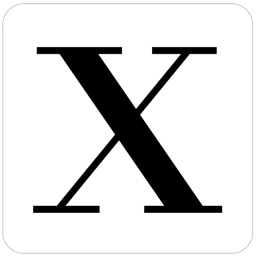

Readable by default
Syntax that gets out of the way. Every line should be easy to scan, understand, and come back to later.

XeroxOpen source language / v1.4
Xerox is a small, mini programming language for people who care about what their code says and who like to edit the whole language yourself.
01 print "Hello, World!"
02
03 let name = "Xerox"
04 print "Welcome to " + name + "!"
05
06 fn greet(name):
07 print "Hello, " + name + "!"
08
09 greet("User")Designed from the ground up for readable, reliable easy work. With a knowledge of python Xerox allows you to create your own version with build-in easy syntax understandings
See what makes it differentSyntax that gets out of the way. Every line should be easy to scan, understand, and come back to later.
A compact compiler and instant feedback loop keep your attention on the problem, not the build process.
Strong types, useful errors, and a stable standard library help small ideas grow into dependable systems.
Latest stable release
All downloads are for Windows x64.